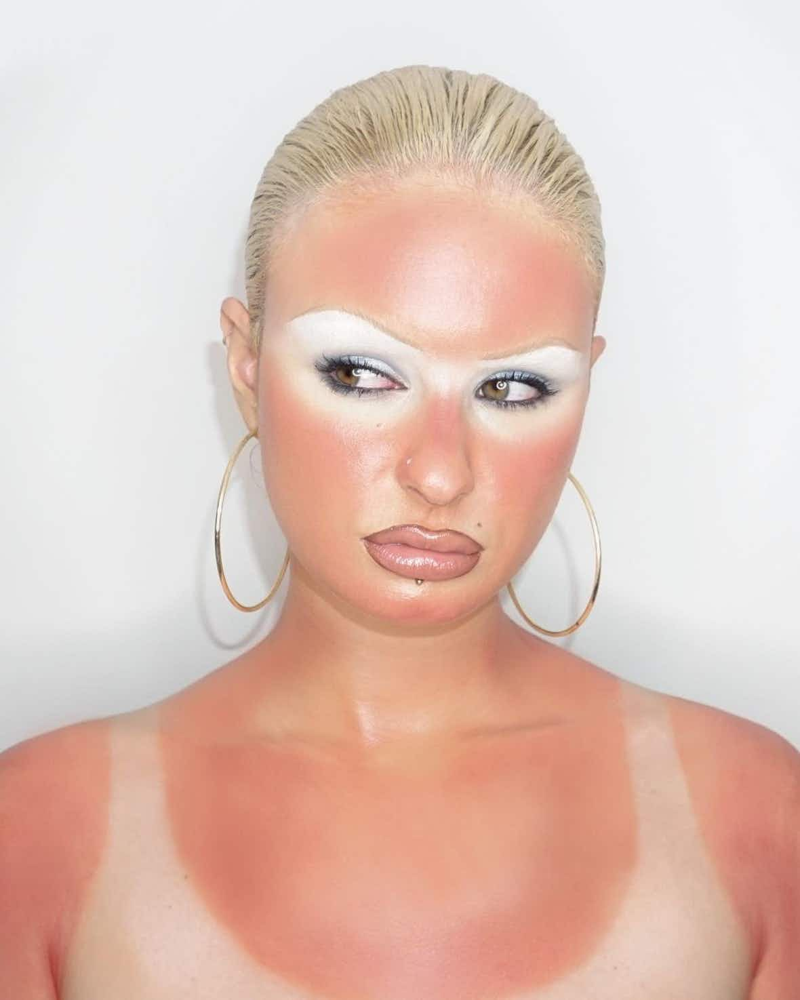
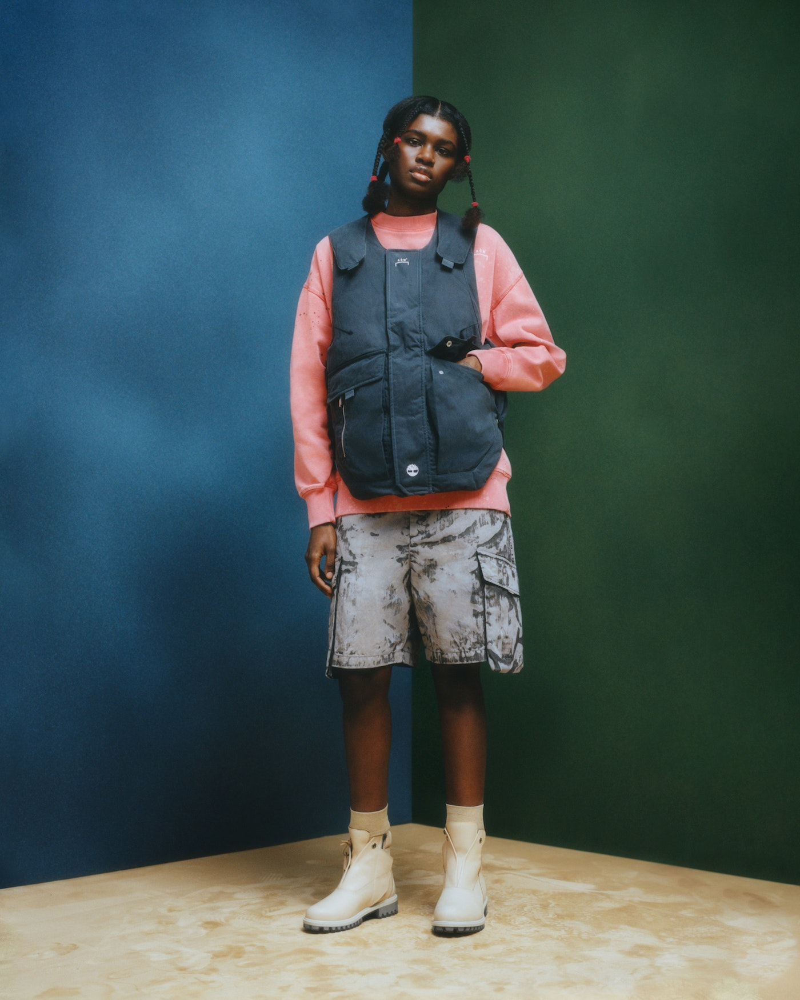
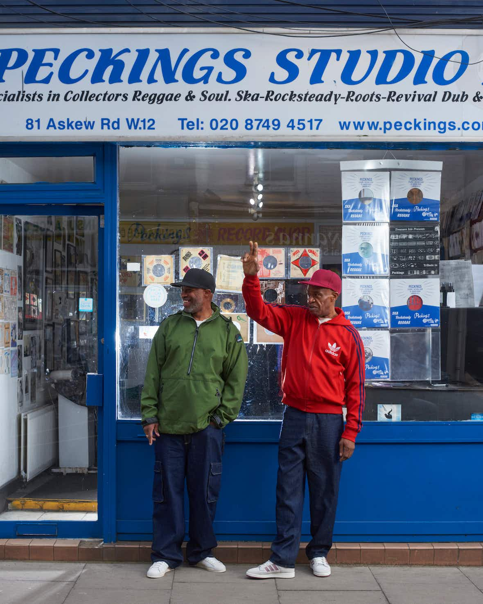
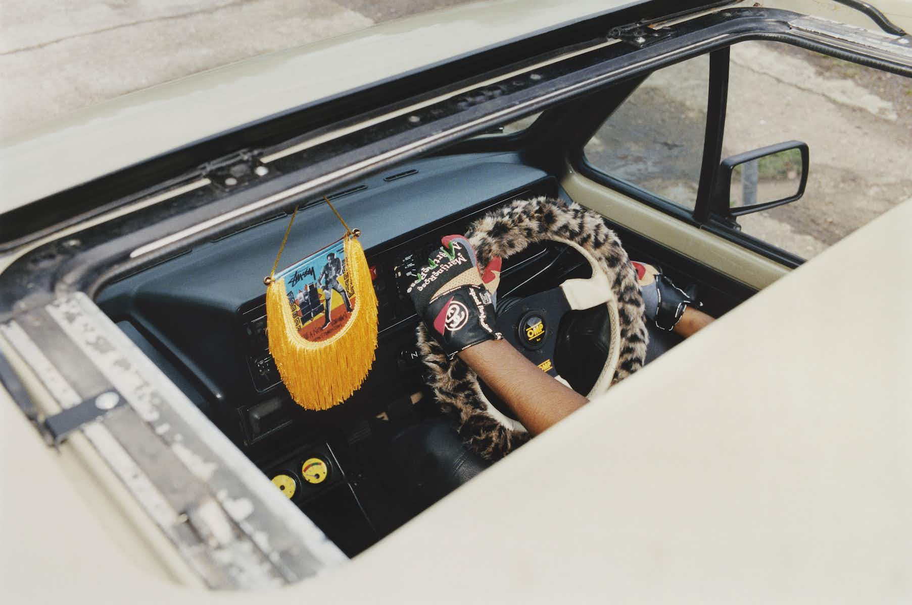

Meet Alice Dodds, a self-taught beauty head who’s building her own tribe of underground weirdos.
Like many Brits her age, 25-year old make-up artist Alice Dodds’ early initiation into beauty
involved Dream Matte Mousse, an Urban Decay Naked Palette and some blue eyeliner. “I’d go into
Norwich on the weekends, buy my Dream Matte Mousse, then walk around with an orange face looking so
crusty,” she says. “They’re still such vivid memories. Most people I speak to always reference the
Dream Matte Mousse period – the hold it had on all of us!”
These days, she’s one of the most provocative make-up artists working in London. Entirely
self-taught, Dodds’ work slips and slides between sci-fi aliens, sexy goths and page three pin-ups.
“I don’t really think of myself as someone who knows loads about fashion, art and all that,” she
says. Instead, she finds references in “regular people, like bimbos, porn stars, Katie Price.
That’s where a lot of my sexy make-up comes from when I’m looking for inspiration.”
Growing up in Norwich had an influence on Dodds, too. Did you know it’s “the goth capital of the
UK”? Neither did we. “There are so many goths there, like one in three people are goths, I swear,”
she says. “So those kinds of people, whose everyday looks are always a statement, really inspire
me. It doesn’t even have to be extreme.”

Timberland celebrates 50 years of a modern icon
Like all great classics, the Timberland Premium 6‑Inch Boot evokes a fair share of stories from its
fans. For Opening Ceremony’s co-founder Humberto Leon, putting on a pair for the first time as a
young kid was a bit of a cultural awakening.
“My sister’s boyfriend was a construction worker and he wore Timberland boots,” he says. “I was
obsessed with these boots. I’d stand in front of the mirror wearing the boots with a pair of denim
shorts and a white V‑neck T‑shirt – I know, the V‑neck is a little controversial.”
Leon is one of six designers who have collaborated with Timberland on a collection to celebrate the
anniversary of the storied 6‑Inch. Titled Future73, the collection also includes boot updates from
A‑Cold-Wall* founder Samuel Ross, artist and painter Nina Chanel Abney, knitwear researcher and
footwear innovator Suzanne Oude Hengal, the founder of Hong Kong streetwear label Clot Edison Chen,
and Christopher Raeburn. And when you put this many creative heads in one room, well, the outcome is
going to be anything but expected.

Adidas CONFIRMED’s new lookbook champions the city creatives at the beating heart of their
communities. Read and listen why focusing on originality – from donuts to dubplates – is the key to
their success.
Every city has its characters: people who are as firmly part of the neighbourhood’s foundations as
its actual, physical landmarks. You know the ones: the shop owners, stallholders, bartenders and
baristas stitching together the fabric of a community, always ready with a smile, wave and slice of
advice. A product of cosmopolitanism and optimistic thinking, these people are as real as it gets,
unique individuals with their own style bringing their personal edge to creative ventures.
If anyone is driven by this commitment to originality and community, it’s adidas: from Stan Smiths
to Superstars, the brand has set the benchmark for decades when it comes to creating stone-cold
classics that ground entire subcultures. Now, the adidas CONFIRMED app lets its members step into
adidas’ own community and explore a curated selection of adidas pieces, original stories,
limited-edition releases and exclusive events.

As Brazil’s epic street party returns in full for the first time in three years, revellers aren’t
just celebrating its comeback. They’re also partying away the division and despair of the Bolsonaro
years.
Hundreds of thousands of people are on the street, marching to the beat of the same, cacophonous,
city-wide drum.
On this block alone, strangers with wide-eyed smiles embrace like long-lost lovers, skewered meats
are frantically exchanged for fistfuls for banknotes, a dreadlocked Spider-Man surveys from above.
Around the corner, a purpose-built arena in the heart of the city, over half a kilometre in length,
is filled with revellers as far as the eye can see and the ear can hear. Most won’t be home much
before dawn.
Welcome to the Rio De Janeiro Carnival. The greatest show on earth – or, at least, the world’s
biggest street party – is back in Brazil in its full glory for the first time in three years. And,
with the recent replacement of far-right Jair Bolsonaro by the Workers’ Party’s Luiz Inácio Lula da
Silva in the country’s presidential elections, it’s taking place at a time of huge political change
in the country.
As night falls with slashes of lightning and a thunderous rumble from above, the revellers making
their way to the Sambadrome – the official name of the city’s 90,000 capacity parade space – are in
the grips of feverish excitement. Friday 17th February marked the official start of the first full
pre-Lenten Rio Carnival since 2020, an eight-day bacchanalia that reaches a giddy climax this
weekend.

Pimp your ride with Stüssy and Martine Rose
Martine Rose and Stüssy have collaborated on a collection for motorheads, waking us up from a
post-bank holiday haze with a teaser drop this morning. Now, we can reveal the fruits of this slick
link-up in its entirety: a leopard-print steering wheel cover, leather driving gloves, an air
freshener, a cat mat set, a fringed flag and a printed windscreen. But not to worry, bus wankers,
there’s apparel for the non-drivers, too, including “Stand Firm” T‑shirts and graphic hoodies. Now,
shut up and drive.
Anyone who’s owned a pair of Dr. Martens will know that breaking in the boot is all part of the
process. It’s apt, then, that the heritage footwear brand’s latest project is called Broken In, an
anthology of stories about the cultures and communities that have circled the brand’s 76-year
history. Made in collaboration with Original Shift magazine, Broken In starts with a zine tracing
the origins of Dr. Martens subculture style, including punk, two-tone and ska tribes. Alongside
Museum of Youth Culture – purveyors of everything, well, youth culture – the 100+ page zine features
archival imagery from Britain’s sartorial past, while bringing in the much-hyped voices of now.
Musician Jeshi, No Signal’s Ghadir Mustafa, British-Iranian documentary maker and photographer Aria
Shahrokhshahi, stylist Rhiannon Isobel Barry and designer Koen Prince-Fraser all get their moment in
the spotlight, sharing their own personal stories with Dr Martens.

Prada’s fancy food, Bimba Y Lola’s sexy summer and Carhartt WIP’s Awakening
Streetwear heads are probably already familiar with Sam Trotman, aka @samutaro, a denim and pop
culture expert, researcher and curator with an encyclopedic knowledge of all things, well, pop
culture. And that’s exactly why Swedish-American brand Gant has tapped Trotman and his big brains
for a celebration of its hefty archive. We present to you: the Gant Archive Exhibition, a four-day
pop-up in London curated by Trotman, featuring some of the brand’s biggest hits and most-loved
pieces, such as varsity jackets, oversized sweats and graphic tees. The exhibition has a particular
focus on the brand’s preppy sportswear and skate-influenced designs from the ’90s. “Prep is
something that has continuously evolved throughout popular culture,” Trotman says, “so it was
important for me to uncover the stories that speak most to today’s generation of young fashion
enthusiasts.”
Forget the old trope about fashion people who don’t eat – of course they do. And where better for
the style-adjacent to get a slap up supper than the brand-new Prada Caffè, located on the ground
floor of Harrods (straight past the diamonds, pearls and priceless jewels). To celebrate the
opening, our friends at Prada had us popping on a bib, slurping up spaghetti, wolfing down chocolate
ganache and washing it all down with champers and an espresso martini (or three). How very favoloso.
As part of Nike’s ongoing HER series, the brand has just revealed the Nike One Short, designed with
the female body in mind. Featuring an ultra-thin, absorbent liner and a two-layer laminate gusset,
the shorts are designed to absorb, wick and hold blood with an anti-leakage barrier, part of the
Leak Protection collection.